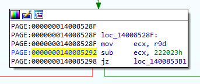
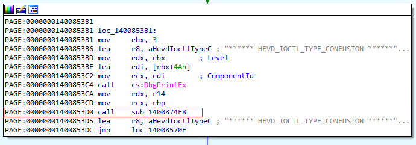

This is the first blog post I ever publish. I hope it could have useful information for anyone interested in Windows Kernel exploitation, reverse engineering and debugging.
I will explain all steps I took in order to exploit the Type Confusion vulnerability contained in HackSys Extreme Vulnerable Driver (HEVD).
I will start on how to setup the kernel debugging lab, the reverse engineering and debugging process itself (in order to identify the vulnerability),
and finally how to exploit the vulnerability, giving details on how to bypass mitigations like SMEP and KVA Shadowing and the shellcode creation process.
This blog post is the first part, in which I will show the reverse engineering and debugging process. In part 2 I will show the exploit development process.
I hope this post could be an introduction to those interested in Windows kernel exploitation, reverse engineering and debugging.
That being said, I assume you are comfortable with C programming have some sort of familiarity with x86_64 assembly, debugging and tools for reversing binaries, like IDA or Ghidra, for example.
Of course, I will try my best to make this blog post as self-contained as possible, but it is by no means intended to be an introduction to binary exploitation itself or the other beforementioned topics.
In order to setup kernel debugging, I will be breaking the process in steps and in subsections while I provide explanations in between.
This way, the first steps needed are:
bcdedit /set testsigning onsc create HEVD binPath=C:\PATH\TO\THE\BINARY\HEVD.sys type=kernel start=system
In order to enable a debugging sesssion, having done the previous steps, there are many possibilities.
The method chosen by me was the one using COM alongside with named pipes, as I find out it worked easily and flawlessly with virtual machines created locally using Hyper-V, and this is the choice I made and the one I will taught next.
This way, read the explanations and follow the steps provided in order to setup the debugging session.
In the debugger machine, open a privileged Windows Powershell and type the following in order to create the named pipe for the debuggee machine which will be used in order to enable the debugging session:
Set-VmComPort DEBUGGEE_MACHINE_NAME 1 \\.\pipe\DEBUGGEE_PIPE_NAMEbcdedit /debug onbcdedit /dbgsettings serial debugport:1 baudrate:115200
Before we are able to exploit the vulnerability, we first need to spot it. In order to do so, we will be doing as if we do not have acess to the driver's source code.
A disclaimer I would like to give before we proceed is: as API functions are presented alongside with the documentation, it is vital that the specification to be studied. This is due to: 1) have a real understanding of what is real happening and; 2) I want you to get used to reading the documentation when needed.
I would not be doing a good job in explaining argument by argument if I want to take in consideration your learning process. This way, reading the documentation and have a real understanding of the API functions is definitive for your success while learning from this blog post.
A common attack surface, and the one we will be studying here, when we talk about device drivers in general, are the IOCTLs. There are others attack vectors, but this information is given as a disclaimer and for completeness.
In order to identify possible IOCTLs codes, which are necessary in order to identify possible code paths that are vulnerable, we first need to learn about one important Windows defined structure: _DRIVER_OBJECT.
To better understand this structure for our purposes, we will first pause the debuggee machine in the debugger and, then, we will use the dt command in WinDbg to display the _DRIVER_OBJECT structure:
kd> dt _DRIVER_OBJECT
ntdll!_DRIVER_OBJECT
+0x000 Type : Int2B
+0x002 Size : Int2B
+0x008 DeviceObject : Ptr64 _DEVICE_OBJECT
+0x010 Flags : Uint4B
+0x018 DriverStart : Ptr64 Void
+0x020 DriverSize : Uint4B
+0x028 DriverSection : Ptr64 Void
+0x030 DriverExtension : Ptr64 _DRIVER_EXTENSION
+0x038 DriverName : _UNICODE_STRING
+0x048 HardwareDatabase : Ptr64 _UNICODE_STRING
+0x050 FastIoDispatch : Ptr64 _FAST_IO_DISPATCH
+0x058 DriverInit : Ptr64 long
+0x060 DriverStartIo : Ptr64 void
+0x068 DriverUnload : Ptr64 void
+0x070 MajorFunction : [28] Ptr64 long
DRIVER_INITIALIZE DriverInitialize;
NTSTATUS DriverInitialize(
[in] _DRIVER_OBJECT *DriverObject,
[in] PUNICODE_STRING RegistryPath
)
{...}#include <windows.h>
#include <atlstr.h>
#include <cstdio>
#include <cstdlib>
int main() {
LPVOID buf = (LPVOID)malloc(sizeof(PVOID)*0x100);
size_t bufSize = sizeof(PVOID)*0x100;
LPDWORD bytesReturned = (LPDWORD)malloc(0x1000);
HANDLE hFile = CreateFileA(
"\\\\.\\HackSysExtremeVulnerableDriver",
GENERIC_READ | GENERIC_WRITE,
FILE_SHARE_READ | FILE_SHARE_WRITE,
NULL,
OPEN_EXISTING,
FILE_ATTRIBUTE_NORMAL | FILE_FLAG_OVERLAPPED,
NULL
);
DeviceIoControl(
hFile,
0x222023,
(LPVOID)buf,
(DWORD)bufSize,
NULL,
0,
bytesReturned,
NULL
);
return 0;
}bp HEVD + (00000001400853B1 - 0000000140000000)************* Path validation summary **************
Response Time (ms) Location
Deferred srv*
Symbol search path is: srv*
Executable search path is:
Windows 10 Kernel Version 19041 MP (1 procs) Free x64
Edition build lab: 19041.1.amd64fre.vb_release.191206-1406
Machine Name:
Kernel base = 0xfffff802`5f000000 PsLoadedModuleList = 0xfffff802`5fc2a360
System Uptime: 0 days 0:00:00.000
KDTARGET: Refreshing KD connection
Capacity:5000, FullChargedCapacity:5000, Voltage:5000, Rate:0
Break instruction exception - code 80000003 (first chance)
*******************************************************************************
* *
* You are seeing this message because you pressed either *
* CTRL+C (if you run console kernel debugger) or, *
* CTRL+BREAK (if you run GUI kernel debugger), *
* on your debugger machine's keyboard. *
* *
* THIS IS NOT A BUG OR A SYSTEM CRASH *
* *
* If you did not intend to break into the debugger, press the "g" key, then *
* press the "Enter" key now. This message might immediately reappear. If it *
* does, press "g" and "Enter" again. *
* *
*******************************************************************************
nt!DbgBreakPointWithStatus:
fffff802`5f406be0 cc int 3
kd> bp HEVD+(00000001400853B1 - 0000000140000000)
kd> g
Breakpoint 0 hit
HEVD+0x853b1:
fffff802`67ad53b1 bb03000000 mov ebx,3
Lets suppose we are covering the IOCTLs present in the driver one by one in order to came accross a vulnerable code path, which is most likely what we want to do in scenarios like this, such that we have a full coverage of the driver.
At some point in this process we will end up analyzing the following block:

This way, we want to analyze the code path that we are lead to in case we met the condition of passing an IOCTL code equal to the constant 0x222023:

Before we proceed, we must take into account important details. First that the function that ultimately leads us to the code path containing the type confusion, is the one responsible for handling IRP_MJ_DEVICE_CONTROL requests.
In other words, this function is a DispatchDeviceControl routine. As per Microsoft documentation:
DRIVER_DISPATCH DriverDispatch;
NTSTATUS DriverDispatch(
[in, out] _DEVICE_OBJECT *DeviceObject,
[in, out] _IRP *Irp
)
{...}typedef struct _IRP {
CSHORT Type;
USHORT Size;
PMDL MdlAddress;
ULONG Flags;
union {
struct _IRP *MasterIrp;
__volatile LONG IrpCount;
PVOID SystemBuffer;
} AssociatedIrp;
LIST_ENTRY ThreadListEntry;
IO_STATUS_BLOCK IoStatus;
KPROCESSOR_MODE RequestorMode;
BOOLEAN PendingReturned;
CHAR StackCount;
CHAR CurrentLocation;
BOOLEAN Cancel;
KIRQL CancelIrql;
CCHAR ApcEnvironment;
UCHAR AllocationFlags;
union {
PIO_STATUS_BLOCK UserIosb;
PVOID IoRingContext;
};
PKEVENT UserEvent;
union {
struct {
union {
PIO_APC_ROUTINE UserApcRoutine;
PVOID IssuingProcess;
};
union {
PVOID UserApcContext;
#if ...
_IORING_OBJECT *IoRing;
#else
struct _IORING_OBJECT *IoRing;
#endif
};
} AsynchronousParameters;
LARGE_INTEGER AllocationSize;
} Overlay;
__volatile PDRIVER_CANCEL CancelRoutine;
PVOID UserBuffer;
union {
struct {
union {
KDEVICE_QUEUE_ENTRY DeviceQueueEntry;
struct {
PVOID DriverContext[4];
};
};
PETHREAD Thread;
PCHAR AuxiliaryBuffer;
struct {
LIST_ENTRY ListEntry;
union {
struct _IO_STACK_LOCATION *CurrentStackLocation;
ULONG PacketType;
};
};
PFILE_OBJECT OriginalFileObject;
} Overlay;
KAPC Apc;
PVOID CompletionKey;
} Tail;
} IRP;kd> bp HEVD + (0x0000000140085078 - 0x0000000140000000)
kd> g
Breakpoint 0 hit
HEVD+0x85078:
fffff802`56ad5078 488bc4 mov rax,rsp
kd> dx -r1 -nv (*((ntdll!_IRP *)@rdx))
(*((ntdll!_IRP *)@rdx)) [Type: _IRP]
[+0x000] Type : 6 [Type: short]
[+0x002] Size : 0x118 [Type: unsigned short]
[+0x004] AllocationProcessorNumber : 0x0 [Type: unsigned short]
[+0x006] Reserved : 0x0 [Type: unsigned short]
[+0x008] MdlAddress : 0x0 [Type: _MDL *]
[+0x010] Flags : 0x60000 [Type: unsigned long]
[+0x018] AssociatedIrp [Type: ]
[+0x020] ThreadListEntry [Type: _LIST_ENTRY]
[+0x030] IoStatus [Type: _IO_STATUS_BLOCK]
[+0x040] RequestorMode : 1 [Type: char]
[+0x041] PendingReturned : 0x0 [Type: unsigned char]
[+0x042] StackCount : 1 [Type: char]
[+0x043] CurrentLocation : 1 [Type: char]
[+0x044] Cancel : 0x0 [Type: unsigned char]
[+0x045] CancelIrql : 0x0 [Type: unsigned char]
[+0x046] ApcEnvironment : 0 [Type: char]
[+0x047] AllocationFlags : 0x4 [Type: unsigned char]
[+0x048] UserIosb : 0x7ae0b0fd00 [Type: _IO_STATUS_BLOCK *]
[+0x050] UserEvent : 0x0 [Type: _KEVENT *]
[+0x058] Overlay [Type: ]
[+0x068] CancelRoutine : 0x0 : 0x0 [Type: void (__cdecl*)(_DEVICE_OBJECT *,_IRP *)]
[+0x070] UserBuffer : 0x0 [Type: void *]
[+0x078] Tail [Type: ]
kd> dx -r1 -nv (*((ntdll!_IRP *)@rdx)).Tail
(*((ntdll!_IRP *)@rdx)).Tail [Type: ]
[+0x000] Overlay [Type: ]
[+0x000] Apc [Type: _KAPC]
[+0x000] CompletionKey : 0x0 [Type: void *]
kd> dx -r1 -nv (*((ntdll!_IRP *)@rdx)).Tail.Overlay
(*((ntdll!_IRP *)@rdx)).Tail.Overlay [Type: ]
[+0x000] DeviceQueueEntry [Type: _KDEVICE_QUEUE_ENTRY]
[+0x000] DriverContext [Type: void * [4]]
[+0x020] Thread : 0xffffca8e5db75080 [Type: _ETHREAD *]
[+0x028] AuxiliaryBuffer : 0x0 [Type: char *]
[+0x030] ListEntry [Type: _LIST_ENTRY]
[+0x040] CurrentStackLocation : 0xffffca8e5bfc0420 : IRP_MJ_DEVICE_CONTROL / 0x0 for Device for "\Driver\HEVD" [Type: _IO_STACK_LOCATION *]
[+0x040] PacketType : 0x5bfc0420 [Type: unsigned long]
[+0x048] OriginalFileObject : 0xffffca8e60e4e950 : "" - Device for "\Driver\HEVD" [Type: _FILE_OBJECT *]
[+0x050] IrpExtension : 0x0 [Type: void *] kd> dx -r1 -nv (*((ntdll!_IO_STACK_LOCATION *)(@rdx + (0x78 + 0x40))))
(*((ntdll!_IO_STACK_LOCATION *)(@rdx + (0x78 + 0x40)))) [Type: _IO_STACK_LOCATION]
[+0x000] MajorFunction : 0x20 [Type: unsigned char]
[+0x001] MinorFunction : 0x4 [Type: unsigned char]
[+0x002] Flags : 0xfc [Type: unsigned char]
[+0x003] Control : 0x5b [Type: unsigned char]
[+0x008] Parameters [Type: ]
[+0x028] DeviceObject : 0x800 [Type: _DEVICE_OBJECT *]
[+0x030] FileObject : 0x222023 [Type: _FILE_OBJECT *]
[+0x038] CompletionRoutine : 0x19073c30a30 : 0x19073c30a30 [Type: long (__cdecl*)(_DEVICE_OBJECT *,_IRP *,void *)]
[+0x040] Context : 0xffffca8e5b5aad10 [Type: void *]
kd> dx -r1 -nv (*((ntdll!_IO_STACK_LOCATION *)(@rdx + (0x78 + 0x40)))).Parameters.DeviceIoControl
(*((ntdll!_IO_STACK_LOCATION *)(@rdx + (0x78 + 0x40)))).Parameters.DeviceIoControl [Type: ]
[+0x000] OutputBufferLength : 0x60e4e950 [Type: unsigned long]
[+0x008] InputBufferLength : 0x0 [Type: unsigned long]
[+0x010] IoControlCode : 0x5000e [Type: unsigned long]
[+0x018] Type3InputBuffer : 0x0 [Type: void *]
kd> dq poi(poi((@rdx + (0x78 + 0x40))) + (0x08 + 0x18))
00000190`73c30a30 32323232`32323232 32323232`32323232
00000190`73c30a40 32323232`32323232 32323232`32323232
00000190`73c30a50 32323232`32323232 32323232`32323232
00000190`73c30a60 32323232`32323232 32323232`32323232
00000190`73c30a70 32323232`32323232 32323232`32323232
00000190`73c30a80 32323232`32323232 32323232`32323232
00000190`73c30a90 32323232`32323232 32323232`32323232
00000190`73c30aa0 32323232`32323232 32323232`32323232
You may be asking yourself: "why on earth would a driver retrieve a function pointer from a buffer sent to it via an IOCTL?"
The answer is not easily identifiable looking exclusively to the compiled binary. In this case, this is because of how unions in C are placed in memory, but what is happening there is a type confusion, meaning the developer received a data of, say, type A and handle it as data of type B.
So, only for this explanation, we will permit ourselves to look at the source code to see how this confusion happens, because its explanation is dependant on the C source code and how the unions defined for the driver were handled on it.
Accordingly to the HEVD source code the structures that the driver deal with are the following:
...
typedef struct _USER_TYPE_CONFUSION_OBJECT
{
ULONG_PTR ObjectID;
ULONG_PTR ObjectType;
} USER_TYPE_CONFUSION_OBJECT, *PUSER_TYPE_CONFUSION_OBJECT;
...
typedef struct _KERNEL_TYPE_CONFUSION_OBJECT
{
ULONG_PTR ObjectID;
union
{
ULONG_PTR ObjectType;
FunctionPointer Callback;
};
} KERNEL_TYPE_CONFUSION_OBJECT, *PKERNEL_TYPE_CONFUSION_OBJECT;
......
NTSTATUS
TypeConfusionObjectInitializer(
_In_ PKERNEL_TYPE_CONFUSION_OBJECT KernelTypeConfusionObject
)
{
NTSTATUS Status = STATUS_SUCCESS;
PAGED_CODE();
DbgPrint("[+] KernelTypeConfusionObject->Callback: 0x%p\n", KernelTypeConfusionObject->Callback);
DbgPrint("[+] Calling Callback\n");
KernelTypeConfusionObject->Callback();
DbgPrint("[+] Kernel Type Confusion Object Initialized\n");
return Status;
}
...
NTSTATUS
TriggerTypeConfusion(
_In_ PUSER_TYPE_CONFUSION_OBJECT UserTypeConfusionObject
)
{
NTSTATUS Status = STATUS_UNSUCCESSFUL;
PKERNEL_TYPE_CONFUSION_OBJECT KernelTypeConfusionObject = NULL;
PAGED_CODE();
__try
{
//
// Verify if the buffer resides in user mode
//
ProbeForRead(
UserTypeConfusionObject,
sizeof(USER_TYPE_CONFUSION_OBJECT),
(ULONG)__alignof(UCHAR)
);
//
// Allocate Pool chunk
//
KernelTypeConfusionObject = (PKERNEL_TYPE_CONFUSION_OBJECT)ExAllocatePoolWithTag(
NonPagedPool,
sizeof(KERNEL_TYPE_CONFUSION_OBJECT),
(ULONG)POOL_TAG
);
...
KernelTypeConfusionObject->ObjectID = UserTypeConfusionObject->ObjectID;
KernelTypeConfusionObject->ObjectType = UserTypeConfusionObject->ObjectType;
...
Status = TypeConfusionObjectInitializer(KernelTypeConfusionObject);
...
NTSTATUS
TypeConfusionIoctlHandler(
_In_ PIRP Irp,
_In_ PIO_STACK_LOCATION IrpSp
)
{
NTSTATUS Status = STATUS_UNSUCCESSFUL;
PUSER_TYPE_CONFUSION_OBJECT UserTypeConfusionObject = NULL;
UNREFERENCED_PARAMETER(Irp);
PAGED_CODE();
UserTypeConfusionObject = (PUSER_TYPE_CONFUSION_OBJECT)IrpSp->Parameters.DeviceIoControl.Type3InputBuffer;
if (UserTypeConfusionObject)
{
Status = TriggerTypeConfusion(UserTypeConfusionObject);
}
return Status;
}